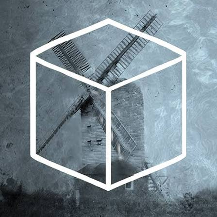

“Welcome to the Rusty Lake Mill.”
Cube Escape: The Mill é o sexto episódio da série Cube Escape, desenvolvido pela Rusty Lake e lançado em 5 de setembro de 2015. A aventura acontece dentro do misterioso moinho de Rusty Lake, residência de Mr. Crow. O jogo mantém a fórmula point-and-click da franquia, combinando exploração, puzzles e acontecimentos estranhos. Enquanto o jogador explora o moinho, uma visita familiar está prestes a chegar e uma misteriosa máquina precisa ser colocada em funcionamento.
A aventura acontece no moinho de Rusty Lake, residência de Mr. Crow. O jogador precisa explorar o local e realizar uma série de tarefas para colocar uma misteriosa máquina em funcionamento, enquanto descobre objetos e mecanismos escondidos pelos diferentes cômodos. Uma visita conhecida está prestes a chegar, tornando a situação ainda mais estranha. Conforme o moinho começa a funcionar, os acontecimentos ficam cada vez mais perturbadores e revelam novas conexões com os mistérios de Rusty Lake. O jogo também continua a desenvolver a história de Dale Vandermeer, cuja investigação começa a se aproximar cada vez mais dos acontecimentos sobrenaturais do lago.